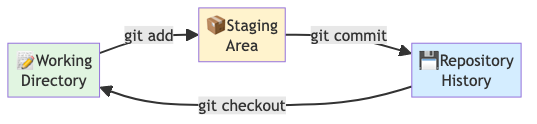

Module 2: Local Git
Module 2: Let’s build something
You know why Git matters. Now time to actually use it.
We’ll build a realistic project — experiment-tracker — tracking one analysis from start to finish. Every Git concept you learn applies immediately.
Getting started
First, check Git is installed and tell it who you are:
These are embedded in every commit you make.
There are many git commands…
Before diving in, a reality check — Git is a big tool:
add clone commit diff fetch init
log merge pull push remote reset
branch checkout stash status tag ...We will focus on about 12 of them today.
The rest you can look up when you need them — git help <command>
Common Git gotchas
Before you dive in, three things that surprise beginners:
Warning
Git tracks files, not folders - Empty folders don’t show up in Git - Workaround: put a .gitkeep file in empty folders you need
Never delete the .git folder - It contains your entire history - If you accidentally delete it, all commits are lost - Backup important repos to GitHub as a safety net
.gitignore doesn’t un-track files - If a file was already committed, adding it to .gitignore won’t remove it - First remove it: git rm --cached filename - Then add to .gitignore, then commit
Tip
When in doubt, git status and git log are your friends. They never lie.
What you’ll practice today
Next, you’ll build this workflow hands-on:
git init— create a repositorygit add→git commit— save snapshotsgit diff— inspect changesgit log— explore history
Ready? Let’s go.
A running example: tracking an experiment
Let’s make those 12 commands concrete. Throughout today we will build one realistic project — experiment-tracker — the kind of folder you might keep next to a real experiment: sample metadata, analysis notes, and a results summary. No programming language required.
The .git folder is where Git stores everything. Never delete it.
Tracking changes — the three stages
Every change you make moves through three places, in order:
Working Directory → (git add) → Staging Area → (git commit) → Repository
Why a staging area? Imagine you fixed a bug and started an unrelated experiment in the same session. The staging area lets you commit the bug fix alone, with its own clear message — without dragging in the half-finished experiment.
The staging area: explained

Three places where your code lives:
- Working Directory — your files, as you’re editing them
- Staging Area — you choose what goes into the next commit
- Repository — your permanent history, safe and backed up
How staging works
You edit file.txt
↓ (git add file.txt)
File is now STAGED (ready to commit)
↓ (git commit -m "message")
File is now in REPOSITORY (permanent history)Key insight: Between editing and committing, you can choose exactly what goes into each snapshot. This is the power of staging.
The Git workflow: visual recap
Beginners ask: “How often should I commit?”
One commit = one logical unit of work
Good commits: - “added sample metadata for 4 samples” - “fixed normalization bug in analysis script” - “documented methods section” - “refactored QC function for clarity”
Avoid: - “stuff I worked on today” (too vague) - “fixed bug and added feature and updated docs” (too many things)
Tip
Rule of thumb: If your commit message needs the word “and” in it, split it into two commits.
Your first file: sample metadata
Your repository exists but is empty. Let’s put something in the working directory — step 1 of the three stages:
sample_id,condition,replicate
S01,control,1
S02,control,2
S03,treated,1
S04,treated,2Ctrl+X → Y → Enter to save and close.
git status
The file exists, but Git hasn’t been told to track it. Check what Git sees:
On branch main
No commits yet
Untracked files:
(use "git add <file>..." to include in what will be committed)
samples.csvGit sees the file but is not tracking it yet.
git add → git commit
Tip
The CLI does the same thing underneath. Use the terminal when you’re comfortable, or any tool that feels natural.
git log
commit ac3eveta1234...
Author: Deepak Tanwar <deepak@uzh.ch>
Date: Mon Jun 23 09:45:00 2025
added sample metadata for 4 samplesWriting good commit messages
Your commit message is a note to future-you (or a labmate) explaining why you made this change.
Good format:
imperative verb: what changed
Optional longer explanation here if needed.
Can reference an issue: "closes #42"Examples: - add qc step to analysis pipeline - fix alignment scoring bug in normalization - update readme with installation instructions
Commit message anti-patterns
Avoid vague or multi-purpose messages:
❌ Bad examples: - "fixed stuff" - "work in progress" - "as requested" - "I changed the code again"
Pro tip: Reference issues in commits
Link commits to GitHub issues automatically:
This automatically closes issue #7 when you merge to main.
The staging area recap

The staging area is your safety net: you can see exactly what will go into your next commit before it’s permanent.
HEAD
HEAD = pointer to the latest commit on your current branch.

When you make a new commit, HEAD moves forward automatically.
Tip
Think of HEAD as a sticky note that says “you are here” — it always points to the tip of whichever branch you’re currently on.
git diff
Diffing shows what changed between two states:

Terminal diffs use +/- prefixes per line — green + for added, red - for removed.
Exercise 3 — Local Git Workflow
You just learned the gotchas, the one-unit rule, and commit message best practices.
See Exercise 3 for the full walkthrough.
Part 1: Setup & tracking
mkdir experiment-tracker && cd experiment-tracker && git init- Create
samples.csvwith sample metadata,git add,git commit - Create
analysis_log.md, document steps with clear commit messages
Exercise 3 continued
Part 2: Inspecting history
git log --oneline— see all your commitsgit diffbefore staging;git diff --stagedafter staging- Compare commits:
git diff HASH1 HASH2
Key practice: Write commit messages using the “one-unit rule” and imperative format.
Ready for Module 3?
You’ve mastered the local workflow: init → commit → log → diff.
Your repository is on your machine only. Next: create branches to try new ideas safely, merge results back, and handle conflicts.
You now have the power to experiment without fear. 🌳
Introduction to Git & GitHub — SIB/UZH